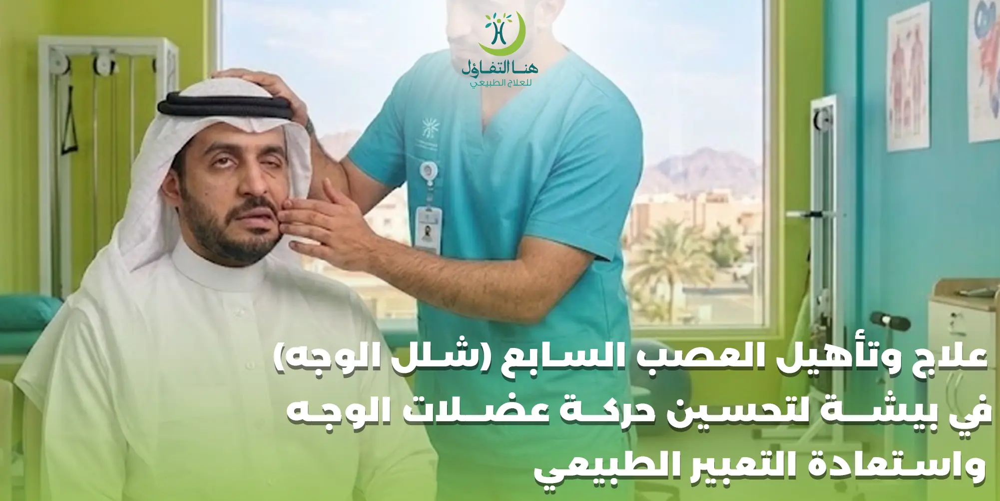

تظهر مشكلة العصب السابع أو شلل الوجه بصورة مفاجئة في بعض الحالات، وقد تؤثر على قدرة الشخص على تحريك جانب من الوجه بصورة طبيعية. وقد يلاحظ المريض اختلافًا في الابتسامة، صعوبة في إغلاق إحدى العينين، ضعفًا في حركة الشفاه أو الخد، أو تغيرًا في تماثل الوجه أثناء التعبير والكلام.
وتحتاج حالات شلل الوجه إلى التعامل معها بصورة دقيقة، لأن تأهيل العصب السابع لا يعتمد على تحريك عضلات الوجه بقوة أو تكرار التمارين العشوائية، وإنما يعتمد على تقييم مرحلة التعافي وطبيعة الحركة الموجودة وتحديد البرنامج المناسب لكل حالة. وتشير إرشادات متخصصة إلى أن تمارين الوجه يجب أن تكون لطيفة ومحددة، وأن المبالغة في الجهد قد تساهم في ظهور حركات غير مرغوبة مثل الحركات التزامنية اللاإرادية (Synkinesis).
وفي بيشة، يمكن أن تكون جلسات العلاج الطبيعي والتأهيل جزءًا من خطة التعامل مع ضعف عضلات الوجه بعد تقييم الحالة، خاصة عندما تستمر الأعراض أو يحتاج المريض إلى تدريب متخصص لاستعادة التحكم في حركات الوجه.
ما هو العصب السابع؟
العصب السابع هو العصب الوجهي، وله دور أساسي في تحريك العديد من عضلات الوجه المسؤولة عن الابتسام وإغلاق العين وتحريك الحاجبين والشفتين والتعبير عن المشاعر.
وعندما يتأثر العصب الوجهي، قد تظهر حالة من ضعف أو شلل عضلات أحد جانبي الوجه. وتعد شلل بيل (Bell's palsy) أحد أكثر أسباب شلل الوجه شيوعًا، لكنها ليست السبب الوحيد لضعف عضلات الوجه، ولذلك فإن التشخيص الصحيح مهم قبل البدء في أي برنامج تأهيلي.
وقد تظهر الأعراض خلال فترة قصيرة، وتشمل في بعض الحالات:
- انخفاض أو ارتخاء أحد جانبي الوجه.
- صعوبة في الابتسام بشكل متماثل.
- ضعف حركة الشفاه.
- صعوبة إغلاق العين بالكامل.
- تغير الإحساس أو التذوق لدى بعض الحالات.
- صعوبة في تناول الطعام أو الشراب.
- ألم حول الأذن لدى بعض المرضى.
- حساسية تجاه الأصوات المرتفعة في بعض الحالات.
علاج العصب السابع في بيشة
علاج العصب السابع لا يكون واحدًا لجميع الحالات، لأن طريقة التعامل مع المشكلة تعتمد على سبب شلل الوجه، ومدى الضعف، ومدة ظهور الأعراض، ومرحلة التعافي.
وفي حالة الإصابة الحديثة بشلل بيل، يكون التقييم الطبي المبكر مهمًا؛ فبعض العلاجات الطبية تكون أكثر فاعلية عندما تبدأ خلال الأيام الأولى من ظهور الأعراض. كما أن حماية العين تمثل أولوية عندما يكون إغلاق الجفن غير كامل.
أما العلاج الطبيعي والتأهيل الوجهي، فيمكن أن يكون جزءًا من الخطة في الحالات التي تحتاج إلى متابعة لاستعادة الحركة والتحكم في عضلات الوجه، خصوصًا عندما لا تعود الحركة بصورة طبيعية أو تظهر حركات غير متناسقة خلال مرحلة التعافي.
تأهيل العصب السابع لاستعادة حركة عضلات الوجه
الهدف من تأهيل العصب السابع ليس مجرد جعل عضلات الوجه تتحرك بأي شكل، وإنما الوصول تدريجيًا إلى حركات أكثر دقة وتناسقًا.
فالوجه يعتمد على مجموعة كبيرة من العضلات الصغيرة التي تعمل معًا أثناء الابتسام والكلام وإغلاق العين والتعبير. لذلك قد يحتاج المريض إلى إعادة تدريب التحكم في الحركة بدل محاولة إجبار العضلات الضعيفة على العمل بقوة.
ملاحظة مهمة:
تشير إرشادات إعادة تأهيل شلل الوجه إلى أن تمارين الحركة يجب أن تكون لطيفة وبجهد منخفض وبصورة متماثلة، وأن البدء في التمارين أو تنفيذها بطريقة غير مناسبة قد يزيد احتمالية ظهور الحركات اللاإرادية.
تحسين تماثل الوجه بعد شلل العصب السابع
يعد عدم تماثل الوجه من أكثر الأمور التي تزعج الأشخاص المصابين بشلل الوجه، خصوصًا أثناء الابتسام أو التحدث أو التقاط الصور.
وقد يكون الفرق بين جانبي الوجه واضحًا في البداية بسبب ضعف الحركة في الجانب المصاب، ثم يبدأ التماثل في التحسن مع عودة نشاط العصب والعضلات.
لكن عودة الحركة لا تعني دائمًا أن جميع العضلات ستعمل بصورة مثالية من تلقاء نفسها. ففي بعض الحالات قد تظهر حركات غير مرغوبة أثناء التعافي، مثل انغلاق العين جزئيًا أثناء الابتسام، أو تحرك عضلات أخرى بصورة غير مقصودة.
ولهذا تحتاج بعض الحالات إلى إعادة تدريب حركي للوجه تحت إشراف مختص لديه خبرة في تأهيل شلل الوجه.
صعوبة إغلاق العين مع العصب السابع
من أهم الأعراض التي يجب الانتباه إليها في حالات شلل الوجه عدم القدرة على إغلاق العين بالكامل.
فالضعف في عضلات الجفن قد يؤدي إلى جفاف سطح العين، ولذلك تكون حماية العين من الأولويات في المراحل المبكرة. وقد يحتاج المريض إلى قطرات أو مرهم للعين أو إجراءات أخرى يحددها الطبيب لحماية سطح العين، خصوصًا أثناء النوم.
تنبيه هام:
إذا كانت العين لا تغلق بشكل كامل أو أصبحت حمراء أو مؤلمة، فيجب الحصول على تقييم طبي مناسب لحماية العين من المضاعفات.
تأهيل عضلات الوجه بعد العصب السابع
بعد بداية التعافي وظهور علامات عودة الحركة، قد يحتاج المريض إلى برنامج متخصص لإعادة تدريب عضلات الوجه.
وقد يركز البرنامج على:
- التحكم في حركة الحاجب.
- تحسين حركة الخد.
- تدريب حركة الشفاه.
- تحسين الابتسامة.
- التحكم في إغلاق العين.
- تحسين التناسق بين جانبي الوجه.
- تقليل الحركات غير المرغوبة.
- تحسين القدرة على أداء التعبيرات الطبيعية.
تنبيه:
التمارين لا تكون واحدة لكل المرضى؛ فمرحلة التعافي مهمة جدًا عند تحديد نوع التدريب المناسب. وتؤكد مصادر متخصصة أن التمارين العامة أو القوية قد تكون غير مناسبة لبعض الحالات، ولذلك يفضل أن يضع البرنامج مختص في إعادة تأهيل شلل الوجه.
هل تمارين العصب السابع مناسبة لجميع الحالات؟
لا.
وهذه من أهم النقاط التي يجب توضيحها لمن يبحث عن تمارين العصب السابع.
قد يكون الشخص في مرحلة مبكرة جدًا من الإصابة، بينما يكون شخص آخر في مرحلة بدأت فيها الحركة بالعودة، وقد يكون مريض ثالث يعاني من حركات لا إرادية بعد التعافي.
كل مرحلة تحتاج إلى تعامل مختلف.
تحذير:
تحذر إرشادات متخصصة من محاولة إجبار العضلات الضعيفة على الحركة أو أداء تمارين الوجه بصورة عشوائية، لأن القوة الزائدة أو الحركة غير الصحيحة قد تساهم في زيادة الشد أو ظهور الحركات غير المرغوبة. لذلك لا يفضل نسخ تمارين من الإنترنت وتطبيقها دون تقييم للحالة.
الحركات اللاإرادية بعد شلل الوجه Synkinesis
في بعض الحالات، لا تعود حركات الوجه بصورة منفصلة ودقيقة، وإنما تبدأ عضلات معينة بالتحرك عند محاولة تحريك عضلات أخرى.
وتعرف هذه الحالة باسم Synkinesis أو الحركات التزامنية اللاإرادية.
ومن أمثلتها أن تتحرك عضلات حول العين أثناء الابتسام، أو تظهر حركة غير مقصودة في جزء من الوجه عند محاولة تحريك جزء آخر.
وتحتاج هذه الحالات إلى تقييم متخصص، لأن الهدف من التأهيل يكون إعادة تدريب الدماغ والعضلات على اختيار الحركة المناسبة وتقليل النشاط غير المرغوب فيه.
علاج الحركات اللاإرادية في عضلات الوجه
عند ظهور الحركات اللاإرادية، لا يكون الحل في زيادة قوة تمارين الوجه.
على العكس، قد تحتاج الحالة إلى برنامج أكثر دقة يركز على:
- • التحكم في الحركة.
- • تقليل الجهد أثناء التعبير.
- • إرخاء العضلات التي تعمل بصورة زائدة.
- • تدريب العضلات على الحركة بشكل منفصل.
- • تحسين تناسق جانبي الوجه.
- • تقليل الحركات غير المقصودة.
وقد تستخدم بعض الحالات علاجات إضافية مثل حقن البوتولينوم لتقليل نشاط بعض العضلات شديدة النشاط، ويحدد ذلك الطبيب المختص بحسب الحالة.
أهمية التقييم قبل جلسات تأهيل العصب السابع
قبل البدء في جلسات التأهيل، من المهم معرفة المرحلة التي وصلت إليها الحالة.
وقد يهتم المختص بتقييم:
- حركة عضلات الوجه – هل توجد حركة فعلية؟ وهل الحركة ضعيفة أم بدأت في العودة؟
- تماثل الوجه – هل الوجه متماثل أثناء الراحة؟ وهل يظهر الاختلاف عند الابتسام أو الكلام؟
- إغلاق العين – هل يستطيع المريض إغلاق العين بشكل كامل؟
- حركة الشفاه والخد – هل يستطيع تحريك الشفاه والخد بصورة منفصلة ومتناظرة؟
- وجود الحركات اللاإرادية – هل تتحرك عضلات أخرى عند محاولة أداء تعبير معين؟
هذه المعلومات تساعد في تحديد نوع البرنامج المناسب بدل استخدام تمارين عامة.
متى يبدأ تأهيل العصب السابع؟
التوقيت يعتمد على مرحلة الحالة، ولا توجد قاعدة واحدة تصلح لكل المرضى.
في المراحل المبكرة من شلل الوجه، يكون التركيز على التقييم الطبي، وحماية العين إذا كان إغلاقها غير كامل، ومتابعة عودة العصب.
تنبيه هام:
أما تمارين حركة الوجه فلا ينبغي البدء بها بصورة عشوائية أو بقوة، لأن توقيتها وطريقة تنفيذها يعتمدان على مرحلة التعافي. وتشير إرشادات Facial Palsy UK إلى أن ممارسة حركات الوجه في وقت مبكر جدًا أو بطريقة خاطئة قد تزيد خطر الحركات التزامنية، وأن التدريب الحركي ينبغي أن يكون مخصصًا للحالة وتحت إشراف مختص.
استعادة التعبير الطبيعي للوجه
من أهم أهداف التأهيل بالنسبة للكثير من المرضى الوصول إلى تعبيرات وجه أكثر طبيعية.
فالابتسامة، والحديث، وإغلاق العين، وتحريك الشفاه والحاجبين كلها حركات مترابطة، وقد تتأثر بدرجات مختلفة بعد شلل العصب السابع.
ولا يعني ذلك أن الهدف هو إجبار كل عضلة على الحركة، وإنما تدريب الوجه على الحركة المناسبة في الوقت المناسب وبأقل جهد ممكن.
وهذا من الأسباب التي تجعل إعادة التأهيل الوجهي المتخصص أكثر أهمية من تمارين تقوية الوجه العامة.
العلاج الطبيعي للعصب السابع
يمكن أن يكون العلاج الطبيعي المتخصص جزءًا من خطة إعادة تأهيل بعض حالات شلل الوجه.
ويختلف العلاج حسب مرحلة الحالة، وقد يشمل عند ملاءمته:
- • التثقيف حول طبيعة التعافي.
- • تقييم حركة عضلات الوجه.
- • تقنيات استرخاء مناسبة.
- • تدليك لطيف في الحالات المناسبة.
- • تدريب الحركة الدقيقة.
- • إعادة تدريب التحكم العصبي العضلي.
- • متابعة التناسق بين جانبي الوجه.
وتشير إرشادات متخصصة إلى أن التأهيل قد يستمر لعدة أشهر في بعض الحالات، وأن البرنامج المنزلي يجب أن يكون مناسبًا للحالة وموجهًا من المختص.
دور التدليك في تأهيل الوجه
قد يستخدم بعض المختصين التدليك اللطيف ضمن برامج تأهيل الوجه، خصوصًا للمساعدة على الاسترخاء والتعامل مع الإحساس بالشد.
لكن التدليك نفسه يجب أن يكون مناسبًا لمرحلة الحالة، وليس من الأفضل استخدام ضغط قوي أو تقنيات عشوائية على عضلات الوجه.
وتشير إرشادات NHS إلى أن التدليك اللطيف للوجه قد يساعد على إرخاء العضلات، مع تجنب المبالغة في تمرين عضلات الوجه أو إجبارها على الحركة.
شلل الوجه وتأثيره على الكلام وتناول الطعام
قد يؤثر ضعف عضلات الشفاه والخد في بعض الحالات على:
- نطق بعض الأصوات.
- التحكم في الطعام داخل الفم.
- الشرب.
- إغلاق الشفاه.
- تنظيف الفم بعد تناول الطعام.
وقد يحتاج المريض إلى عناية إضافية بالفم والأسنان، خاصة إذا كان الطعام يتجمع في الجانب المصاب.
وتشير الإرشادات الطبية إلى أهمية الانتباه إلى نظافة الفم والأسنان عند وجود ضعف في عضلات الوجه.
التأثير النفسي لشلل الوجه
لا تقتصر آثار شلل الوجه على الجانب الحركي فقط.
فعدم تماثل الوجه قد يؤثر على ثقة الشخص بنفسه، وقد يجعل بعض الأشخاص يتجنبون الصور أو اللقاءات الاجتماعية أو الابتسام أمام الآخرين.
وتشير مصادر متخصصة إلى أن شلل الوجه قد يكون له تأثير نفسي واجتماعي، بما في ذلك انخفاض الثقة بالنفس والقلق وتجنب بعض المواقف الاجتماعية.
لذلك فإن تحسن حركة الوجه لا يمثل هدفًا وظيفيًا فقط، وإنما قد يساعد أيضًا الشخص على استعادة شعوره بالراحة والثقة في تعبيراته اليومية.
هل يعود الوجه طبيعيًا بعد شلل العصب السابع؟
تختلف سرعة ومدى التعافي من شخص إلى آخر.
في حالات شلل بيل، تتحسن الأعراض لدى كثير من الأشخاص خلال الأشهر التالية، لكن بعض الحالات قد تعاني من ضعف مستمر أو أعراض متبقية.
ولهذا لا يمكن إعطاء وعد محدد بمدة التعافي أو ضمان استعادة التعبير الطبيعي بالكامل لكل شخص.
وتعتمد النتيجة على سبب شلل الوجه وشدته ومرحلة الحالة ودرجة عودة حركة العصب ووجود أعراض متبقية مثل الحركات اللاإرادية.
متى يحتاج مريض شلل الوجه إلى طبيب؟
إذا ظهر شلل أو ضعف مفاجئ في أحد جانبي الوجه، فلا ينبغي الاعتماد على جلسات العلاج الطبيعي وحدها قبل الحصول على تشخيص طبي.
حالات تستدعي تقييمًا طبيًا عاجلًا:
- • ظهور ضعف الوجه مع أعراض عصبية أخرى مثل ضعف الذراع أو الساق، اضطراب الكلام، أو أعراض مفاجئة أخرى (يستدعي تقييمًا طبيًا عاجلًا لاستبعاد حالات طارئة مثل السكتة الدماغية).
- • العين تحتاج إلى اهتمام طبي سريع إذا كان الجفن لا يغلق بشكل كامل، أو أصبحت العين حمراء أو مؤلمة أو معرضة للجفاف.
علامات تستدعي متابعة متخصصة
يمكن التفكير في الإحالة إلى مختص في إعادة تأهيل شلل الوجه عند وجود:
- • ضعف مستمر في عضلات الوجه.
- • عدم تحسن واضح خلال فترة المتابعة.
- • استمرار عدم تماثل الوجه.
- • ظهور حركات لا إرادية.
- • شد مستمر في عضلات الوجه.
- • صعوبة في التحكم في الابتسامة.
- • مشاكل مستمرة في إغلاق العين.
- • صعوبة في الأكل أو الكلام.
- • تأثير واضح على الثقة بالنفس والحياة اليومية.
وتوصي جهات متخصصة بإحالة الحالات التي لا تتعافى بصورة كافية إلى أخصائي علاج طبيعي أو علاج نطق ولغة لديه خبرة في تأهيل شلل الوجه.
أهمية المتابعة المنزلية في تأهيل العصب السابع
قد يتضمن البرنامج التأهيلي تدريبات منزلية، لكن يجب أن تكون مناسبة لمرحلة الحالة ومحددة من المختص.
وهذه نقطة مهمة لأن تمارين الوجه ليست مثل تمارين عضلات الذراع أو الساق التي يمكن فيها الاعتماد على زيادة المقاومة تدريجيًا.
تنبيه:
في تأهيل الوجه، قد تكون الحركة الدقيقة أهم من القوة، وقد يؤدي الإفراط في الجهد إلى نتائج عكسية لدى بعض الحالات. لذلك ينبغي الالتزام بالتعليمات التي يضعها المختص، وعدم إضافة تمارين جديدة من مصادر غير موثوقة.
لماذا تختلف جلسات تأهيل العصب السابع من شخص إلى آخر؟
لأن كل حالة تمر بمرحلة مختلفة.
فالمريض الذي يعاني من ضعف شديد وعدم وجود حركة واضحة يحتاج إلى تقييم مختلف عن المريض الذي بدأت لديه الحركة بالعودة.
كما أن الشخص الذي يعاني من Synkinesis يحتاج إلى تدريب مختلف عن الشخص الذي يعاني فقط من ضعف في الحركة.
لذلك لا يوجد برنامج واحد يمكن نسخه لجميع المرضى.
والبرنامج الفردي يساعد على تحديد:
- • الحركات المناسبة.
- • مستوى الجهد.
- • مدة التدريب.
- • المناطق التي تحتاج إلى استرخاء.
- • العضلات التي تحتاج إلى إعادة تدريب.
- • كيفية متابعة التطور.
الأسئلة الشائعة عن علاج وتأهيل العصب السابع في بيشة
ما هو العصب السابع؟
العصب السابع هو العصب الوجهي، وهو مسؤول عن تحريك عدد كبير من عضلات الوجه، ولذلك يمكن أن يؤدي تأثره إلى ضعف أو شلل في أحد جانبي الوجه.
هل العلاج الطبيعي يساعد في شلل الوجه؟
يمكن أن يكون العلاج الطبيعي المتخصص وإعادة التأهيل الوجهي جزءًا من خطة التعامل مع الحالات المناسبة، خصوصًا عند وجود ضعف مستمر أو الحاجة إلى إعادة تدريب الحركة.
هل يمكن علاج شلل الوجه بالتمارين؟
قد تستخدم تمارين مخصصة في مراحل معينة من التعافي، لكن لا ينبغي ممارسة تمارين الوجه بصورة عشوائية أو بقوة؛ لأن توقيتها وطريقة تنفيذها تختلف حسب مرحلة الحالة.
هل تمارين العصب السابع مناسبة في بداية الإصابة؟
ليس بالضرورة. توقيت تمارين الحركة يعتمد على مرحلة التعافي، وتوصي مصادر متخصصة بعدم إجبار العضلات الضعيفة على الحركة أو البدء في تدريبات الحركة دون تقييم مناسب.
هل شلل الوجه يؤثر على إغلاق العين؟
نعم، قد يؤدي ضعف العصب الوجهي إلى صعوبة إغلاق العين بالكامل، ولذلك تحتاج العين إلى حماية وعناية مناسبة لتجنب الجفاف أو الضرر.
ما سبب تحرك العين أثناء الابتسام بعد شلل الوجه؟
قد يكون ذلك من علامات Synkinesis، وهي حركات لاإرادية مرتبطة بعودة التعصيب بصورة غير طبيعية، وتحتاج إلى تقييم متخصص وبرنامج تأهيل مخصص.
هل يمكن أن يعود الوجه طبيعيًا بعد العصب السابع؟
كثير من حالات شلل بيل تتحسن، لكن سرعة ومدى التعافي يختلفان بين الأشخاص، وقد تستمر بعض الأعراض لدى بعض الحالات.
متى أحتاج إلى أخصائي تأهيل للعصب السابع؟
عند استمرار ضعف الوجه، أو عدم تحسن الحركة، أو ظهور الحركات اللاإرادية، أو وجود مشكلة مستمرة في التماثل أو التحكم في عضلات الوجه، يمكن طلب إحالة إلى مختص لديه خبرة في إعادة تأهيل شلل الوجه.
هل يمكنني عمل تمارين الوجه من الإنترنت؟
لا يفضل ذلك دون تقييم متخصص، لأن بعض التمارين قد لا تناسب مرحلة التعافي وقد تزيد المشاكل لدى بعض الحالات إذا تم تنفيذها بقوة أو بطريقة خاطئة.
احجز جلستك في مركز هنا التفاؤل ببيشة
إذا كنت تعاني من ضعف أو شلل في عضلات الوجه، عدم تماثل الابتسامة، صعوبة في إغلاق العين أو حركات لا إرادية بعد العصب السابع، فلا تؤجل التقييم. يساعد التشخيص المبكر على وضع خطة علاجية مناسبة قد تساهم في تحسين الحركة واستعادة التعبير الطبيعي.